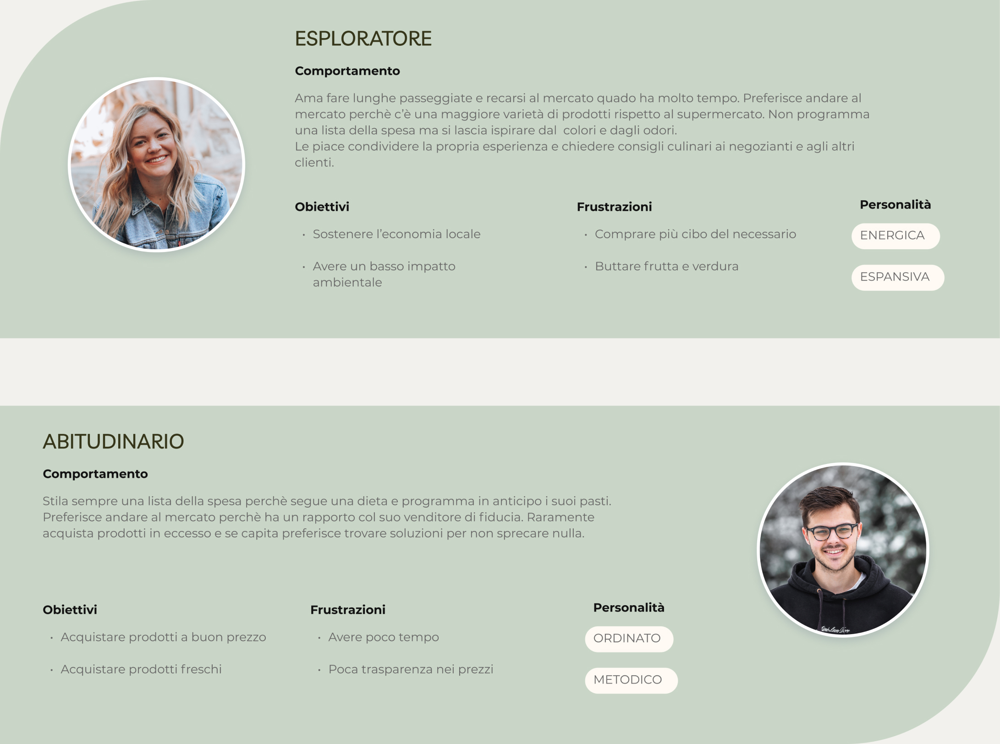
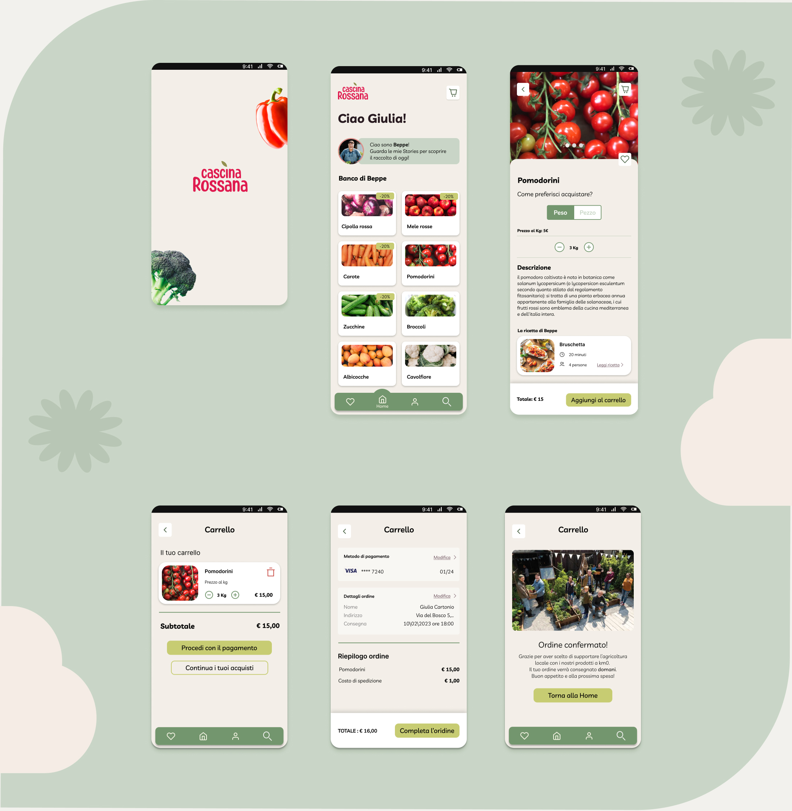

2023
This app was designed during a design sprint course organized by FDA. In just five days, we analyzed the problem, created solutions, and tested prototypes.
Our client Beppe recently joined his family's agricultural business. During the lockdown, he experimented with home deliveries using WhatsApp for orders and Instagram to showcase his work and products. Beppe wants to create an application that can increase and simplify the online sale of fruits and vegetables, however, many of his customers still prefer to physically visit the market.
As UX/UI designers, our challenge is to design an application that provides an optimal user experience for online fruit and vegetable sales, recreating the journey of the customer physically present at the market.
In collaboration with: Marco Griffini
As a first step we have studied the target of customers who routinely frequent the Beppe' stand. Through an interview, we investigated the habits and behaviors of customers in the various stages of purchase : before going to the market, during and after. Finally, we analyzed and clustered the responses in subcategories and created two different profiles of User Personas: the Esporatore and the Abitudinario.
Once we searched for the best solutions using HWM and Brainwriting techniques, we evaluated their priority using the Impact/Effort matrix.The ideas we have evaluated as the most valid are:
Finally, we created high-fidelity wireframes,designed the logo, selected the color palette, and built the prototype, that we tested with real users in a remotely moderated mode.
